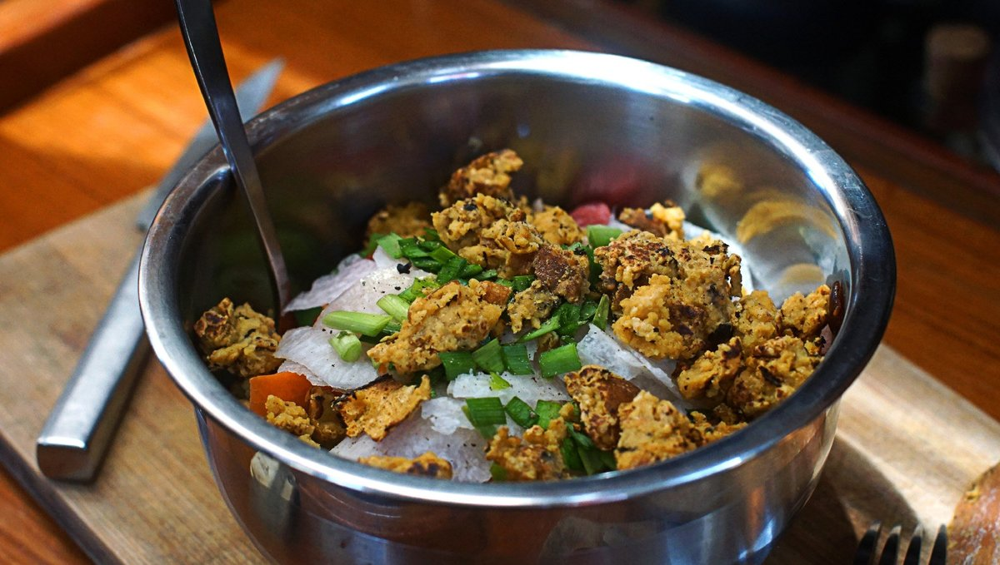

scrambled chickpea flour
2 servings — 15 minutes
An ingredient that is important in my galley, is chickpea flour, also known as garbanzo flour, gram flour and besan flour. It is not an essential ingredient, but I really love it. It helps to give my meals variety, plus it has a long shelf life due to the low-moisture and low-fat content.
Chickpea flour has a texture and taste that is ideal for savoury pancakes or faux-omelettes. As this recipe suggests, it also makes a very good alternative to scrambled tofu.
Flavors
You can add extra flavourings, like chili pepper flakes, curry powder, cumin, smoked paprika or liquid smoke for an extra kick.
Recommendations
I like to eat scrambled chickpea flour with a side of sliced avocado, topped with a drizzle of sambal oelek or sriracha. Sometimes when I make meal salads, I add it for bulk. Another meal I enjoy with this recipe is a sort of ovenless deconstructed pate chinois (quebec-style sheperd's pie), I eat it with mashed potatoes, corn and sambal oelek. You can also make this with cooked chickpeas by smashing them with a fork and mixing them up with nutritional yeast, salt and other flavourings.
 chickpea flour40 g
chickpea flour40 g nutritional yeast15 g
nutritional yeast15 g tahini15 g
tahini15 g salt1.25 g
salt1.25 g water160 ml
water160 ml
scrambled chickpea flour
- In a bowl, mix 40 g (1/2 cup) of chickpea flour, 15 g (1/4 cup) of nutritional yeast, 15 g (1 tbsp) of tahini, 1.25 g (1/4 tsp) of salt and 160 ml (2/3 cup) of water.
- Bring a non-stick pan to medium heat. Sprinkle a bit water in the pan, if it sizzles pour the contents of the bowl into the pan. (this will make it stick less)
- Let mixture heat for 3-5 minutes.
- When the edges start to cook, flip it and start to break it apart with the side of the spatula.
- Let it cook for a minute, then continue to break it apart further. You'll need to do this repeatedly, until the mixture is broken up into smaller bits and until it has become dry and crisp for 8-10 minutes or so. When cooking, it's important to stir often, and to constantly break it up into smaller bits so all sides can can cook.
- NOTE: I like to use a spatula and a fork to break it up, and also to brush some of the batter off the spatula (it is very wet in the beginning and is a bit sticky). Serve into salads, or as a side for other dishes.